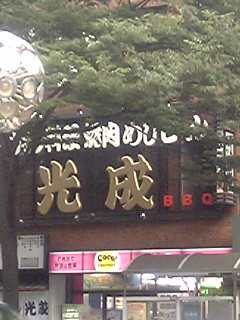

|
名前 江口 朝子 | 担当楽器 Ａｓ | ||
| 一言 | ||||
|
|
名前 鈴木 祐太 | 担当楽器 Ａｓ | ||
| 出身 恵那市 | 住所 クレストＭＫ四谷 | |||
| 勉強していること 土木 | やめたいこと ジャンプを買うこと | |||
| 車校 ９ヶ月 | ||||
| 一言 | 錦三丁目で飲んだことがあります。 | |||
|
|
名前 中尾 愛美 | 担当楽器 Ａs | ||
| 呼称 にゃま | 星座 おうし座 | |||
| 血液型 Ｏ型 | 性格 言葉では言いつくせない | |||
| 好きな野菜 トマト、たまねぎ、じゃがいも | 嫌いな野菜 ごぼう | |||
| 一言 | あたし，にゃまです☆ＪＡＺＺがんばるぞー | |||
|
|
名前 浅見 優美子 | 担当楽器 Ｔs | ||
| 星座 双子座 | 通学手段 リニモ | |||
| 好きな所 のんびりした場所 | 嫌いな食べ物 チーズ マヨネーズ | |||
| 好きなこと 空をぼーっと見る | 性格 マイペース、のんびり | |||
| 一言 | エーデルのテンションについていけるようにします☆ （チーズ入りの食べ物は与えないでほしいです） |
|||
|
|
名前 羽土 沙織 | 担当楽器 Ｂs | ||
| 星座 さそり | 学部 教育 | |||
| めがね ピンク | 好きな先輩 まどう先輩 | |||
| 血液型 Ｏ | 嫌いな野菜 なす | |||
| 一言 | はやくジャズのカンを身につけられるようにがんばります！ | |||
|
|
名前 打田あゆみ | 担当楽器 Ｔｂ | ||
| 血液型 AB型だって | 星座 いて座☆ | |||
| 学部 薬学 | 好き ぱんだ、チョコレート | |||
| 羨望 J.J.Johnson | 尊敬 歌丸師匠 | |||
| 一言 | ひねもすのたり | |||
|
|
名前 大島 佳子 | 担当楽器 Ｔp | ||
| 血液型 Ｂ | 学部 理学部 | |||
| 星座 水がめ座 | ほしいもの 視力 | |||
| 性格 典型的Ｂ型 | 名前誤答例 大森、ゆか、その他多数 | |||
| 一言 | がんばります。 | |||
| 名前 タニフジカズキ | 担当楽器 とらんぺっと | |||
| 好きな映画 ９ソウルズ・青い春 | 好きな栄華 ヒルズ族の台頭 | |||
| 好きなエビ すきじゃない | 好きなエイ イトマキエイ | |||
| 好きなＡ Ａ＋＋ | 好きな「え」 ゑ | |||
| 一言 | いぬ | |||
| 名前 渡部 愛子 | 担当楽器 +++<| | |||
| 呼称 Ｔｉｎｋｅｒbｅｌl | 出身 Neverland （←苦情却下） |
|||
| みんなの印象 （恐らく）たくましい。 | もらってうれしいもの 新鮮な空気。 | |||
| 好きな食べ物 お酒と郷土料理とおいしいもの全部。 | 言ってほしい言葉 「身長伸びたね。」 「年齢相応だね。」 |
|||
| 一言 | むずかしい事は言わないでください。 | |||
|
|
名前 城戸 理恵子 | 担当楽器 Ｐｆ | ||
| 一言 | ||||
|
|
名前 大竹 峻 | 担当楽器 Ｇ | ||
| Ｏ型 | さそりざ | |||
| エ | ||||
| 美濃加茂 | 男 | |||
| 一言 | これから３年間よろしくおねがいします | |||
| 名前 金田 創運 | 担当楽器 Ｇ | |||
| 苦手なもの しいたけ、小学1年生 | バイト代 貯金 | |||
| 妹のパーマ おばさん | 母のパーマ 哀愁 | |||
| チャームポイント くっきり二重 | 外人？ 人種は重要じゃないよ | |||
| 一言 | そうはいくか！ | |||
| 名前 平光佐織 | 担当楽器 G Fl | |||
| 血液型 Ｂ型 | 星座 カニ座 | |||
| 出身 岐阜 | 特技 ちくわ笛 | |||
| 苦手なもの 朝 | 好きな言葉 努力 根性 ピカチュウ | |||
| 一言 | 北海道大好きです。ジャズがんばります！ | |||
|
|
名前 大谷 実里 | 担当楽器 Ｂ | ||
| スペ語をムーチョ愛する県大生 | どマイペースなＢ型 | |||
| 出身地 マツケンと一緒 | 特技 水ぶくれに容赦なく針を刺す | |||
| 好きなソウル サムライソウル | ||||
| 一言 | 実はいい人です・・・になりたひ | |||
|  | 名前 光成 正 | 担当楽器 Ｂ | ||
| 自然を愛する岡山生まれ | 所属 ＢＫセクション | |||
| 好きな所 うなじ | 好きな組合せ ビスコとミルクティー | |||
| ほしいもの 溢れんばかりのイマジネーション | 将来像 出来る男 | |||
| 一言 | ばかです。べえすです。 | |||
| 名前 加藤広祐 | 担当楽器 Ｄｒｓ | |||
| 愛称 ジョーンズ | 血液型 多分Ｏ型 | |||
| 誕生日 終戦記念日 | 好きな食事 らーめん、はえ | |||
| 嫌いなもの 犬くさい家 | 好きなところ 胸先を突き上げてくるギリギリのところ | |||
| 一言 | だめ、ぜったい。 | |||
戻る | Homeに戻る